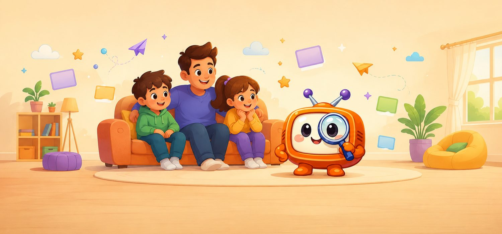

Sendezeiten, Altersempfehlungen, kostenlose Mediatheken und aktuelle Kinderfilme – ruhig, übersichtlich und ohne Suchstress.

KiKA sendet täglich von 6 bis 21 Uhr werbefrei und ist der einzige öffentlich-rechtliche Kindersender. Super RTL zeigt bis 11 Uhr unter dem Label Toggolino Vorschulprogramm und danach als Toggo Inhalte für Kinder ab etwa sechs Jahren. Dazu kommen Nickelodeon, Disney Channel, Toggo plus und RiC.
Die grüne Kante links an einer Zeile bedeutet: Es gibt eine kostenlose Möglichkeit, die Sendung zu sehen: im Free-TV oder in einer Mediathek.
Die Angabe „ab 6" ist eine redaktionelle Einschätzung anhand von Tempo, Lautstärke und Konfliktdichte der Sendung. Sie steht bei jeder Zeile und ist im Detail als redaktionell gekennzeichnet.
Eine FSK-Freigabe existiert dagegen nur für Kinofilme und Bildträger. Einzelne Serienfolgen im Fernsehen tragen keine FSK: dort steht deshalb „keine Angabe". Bei Kinderfilmen wird die FSK-Stufe zusätzlich als eigenes Feld angezeigt.